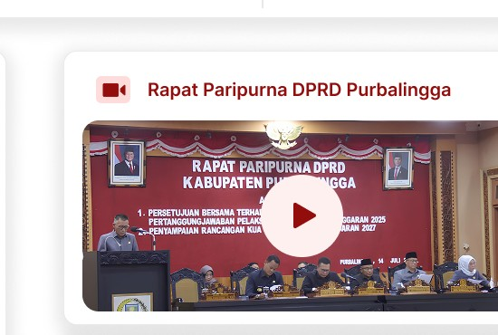

150+Anggota & Pegawai
45Dokumen Publik
250+Informasi Tersedia
100%Pelayanan Transparan
Sekretariat DPRD Kabupaten Purbalingga
Sekretariat DPRD merupakan unsur pelayanan administrasi dan pemberian dukungan terhadap tugas dan fungsi DPRD. Website ini menjadi pusat informasi publik, layanan digital, serta dokumentasi kegiatan.
Selengkapnya
Profil Sekretariat DPRD PurbalinggaKenali pelayanan dan fungsi kami
Hasil Survei Indeks Kepuasan Masyarakat
93.275
Kinerja Pelayanan: SANGAT BAIKAkses Cepat
Layanan Utama
Bersama Mewujudkan DPRD yang BerintegritasTransparan, informatif, dan melayani masyarakat.